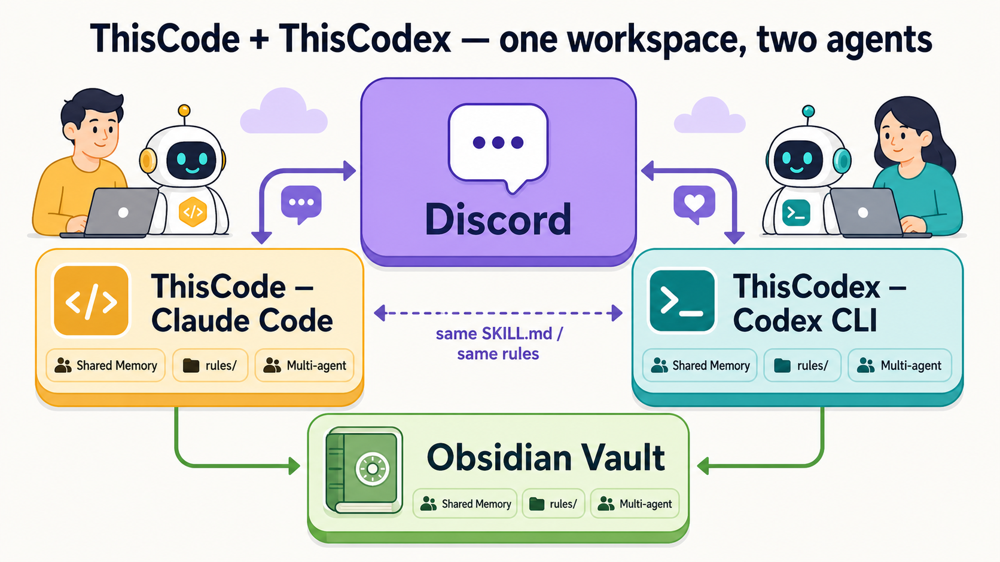

한 작업공간, 두 에이전트 — 디스코드에서 Claude Code 봇과 Codex 봇을 함께 운영하고, 같은 옵시디언 볼트·메모리·규칙을 공유하는 재현 가능한 세팅. 최종 정리 (2026-05-16)

그림 한 장이 전체 개념입니다 — Discord ↔ (ThisCode = Claude Code 봇 / ThisCodex = Codex 봇) ↔ Obsidian 볼트 · 공유 메모리 · rules
사전 지식 없이 따라올 수 있게 정리했습니다. 프레임워크가 아니라 출처가 달린 검증된 building block(구성 부품) 모음입니다.
bash install.sh 한 줄로 Claude Code + tmux + Discord 봇 환경을 세팅하는 종합 배포물. 핵심 가치는 4-Tier 볼트 검색(GraphRAG→vault-search→Obsidian CLI→ripgrep) + 모델 라우팅. 멀티 에이전트·옵시디언·rules 종합.codex CLI 에이전트를 Claude Code 봇과 똑같이 동작하게 만드는 검증된 패턴 + 설치형 skill(skills/thiscodex/). 두 런타임 공통 규칙(이식성·rules·멀티에이전트)도 여기.| 기능 | 상태 | 방식 |
|---|---|---|
| Codex/Claude CLI를 상시 디스코드 봇으로 | ✅ | app-server(화면 없는 실행) + 파이썬 bridge(다리) + discord.py |
| 멀티 클라이언트 동일 스레드 (봇 대화를 터미널 화면으로 관전·개입) | ✅ | 같은 app-server에 codex resume <스레드ID> --remote |
| 페르소나·볼트 규칙 자동 로드 | ✅ | project_doc_fallback_filenames=["SOUL.md","AGENTS.md"] |
| 봇끼리 호출 + 회의 규율 + 세션시작 주입 | ✅ | bot-roster.yaml 단일 기준 파일 |
| 전체 권한(yolo) 실행 | ✅ | thread/start와 thread/resume 둘 다 danger-full-access 전송 |
| 이미지 생성 / 웹 조회 | ✅ | codex 내장 image_gen / web.run |
computer_use/browser_use | ⏸️ 보류 | flag는 stable,true지만 공식 codex 명령/서브커맨드가 없어 호출 가능 도구가 아님 — openai/codex#20851 대기. 우회 없이 정직 명시 |
tmux 세션
├─ 윈도우: infra
│ codex app-server (화면 없는 LLM 런타임, ws://127.0.0.1:4222)
│ ▲│ JSON-RPC over WebSocket
│ │▼
│ bot.py ──discord.py on_message──▶ 디스코드
│ - thread/start (danger-full-access, approvalPolicy=never)
│ - thread/resume (.codex-thread-id → 같은 파라미터 재전송) ← 핵심
│ - 매 턴 <channel …> 주입 → codex가 mcp__discord__reply 호출
└─ 윈도우: codex
codex resume "$(cat .codex-thread-id)" --remote ws://127.0.0.1:4222
→ 운영자가 같은 대화 스레드를 보고 직접 개입 (멀티 클라이언트 동일 스레드)
Claude Code 봇도 모양이 같습니다. 들어오는 이벤트 주입이 claude 내장 vs Codex는 작은 파이썬 bridge. 나가는 응답은 동일.
codex CLI · tmux · Python3+websockets · Discord 플러그인 · gh auth login~/.codex/config.toml에 project_doc_fallback_filenames + discord MCP 설정SOUL.md(페르소나) + AGENTS.md(규칙 — rules/INDEX.md만 가리킴)ThisCodex/scripts/launch.sh 사용 — 2-윈도우 런처. codex 창은 항상 codex resume <브리지 스레드ID> --remote (빈 codex --remote 금지 — Troubleshooting 참고). 직접 만들지 말 것~/.agents/skills/thiscodex/ 복사 또는 codex plugin marketplace add treylom/ThisCodexbot-roster.yaml(단일 기준 파일, 세션 시작 시 주입)에 사는 규칙으로 Claude Code + Codex 에이전트가 공존합니다.
<@user_id> mention 또는 reply (없으면 받는 봇이 조용히 버림). user_id는 봇 토큰에서 결정적 추출 — 추측 금지규칙을 CLAUDE.md/soul.md/메모리에 전부 front-load하면 context가 비대해져 recall이 떨어집니다. 그래서 rules/INDEX.md 라우터 하나만 항상 로드하고, 상황 트리거가 맞을 때 그 rule 파일을 그때 읽어 적용합니다. 메모리는 학습 경위, rule 파일은 적용 spec(1:1 cross-link). 우선순위: 사용자 지시 > rule 파일 > 인라인 기본.
본인 자작 스킬은 ~/.agents/skills/<name>/SKILL.md로 복사·동기화. 플러그인/프레임워크 스킬(예: superpowers)은 그쪽 upstream의 자체 codex 경로로 설치(hand-symlink 금지) — superpowers는 obra/superpowers .codex-plugin/plugin.json → 공식 Codex marketplace. 원칙: 이식 전 원본 레포의 플랫폼별 패키징을 먼저 확인.
2026-05-15-codex-discord-bot-poccomputer_use 미노출: codex features list(플래그 true) vs #20851(데스크톱 앱 번들 MCP 전용) vs 깨끗한 app-server 턴(도구목록에 브라우저/컴퓨터 도구 없음) — 6신호 수렴thread/resume 시 sandbox 재전송 안 하면 조용히 권한 격하 → 재전송으로 수정codex --remote(빈 세션)로 뜨면 infra는 잡고 TUI는 안 잡힘 → ThisCodex/scripts/launch.sh 3 불변식으로 구조적 방지(Troubleshooting)macOS / Linux / WSL2 전부 지원(WSL은 실측 검증). 네이티브 윈도우는 WSL 경유. computer_use만 macOS 한정인데 어차피 보류 상태라 실질 기능은 3 플랫폼 동등. 본인이 통제하는 머신 + 신뢰 가능한 비공개 디스코드에서만 사용. computer_use가 CLI에 노출되면 신뢰 불가 텍스트를 LLM "데이터 취급" 지시로만 막지 말 것 — 코드레벨 기본거부·URL 허용목록·일회용 프로필·감사로그 필수.
ThisCode & ThisCodex — treylom · MIT · 2026-05-16 최종 정리. 상세는 각 레포 README(영/한) + docs/ 참조. 본 페이지는 self-contained HTML(의존성 없음) — 그대로 공유/배포 가능.